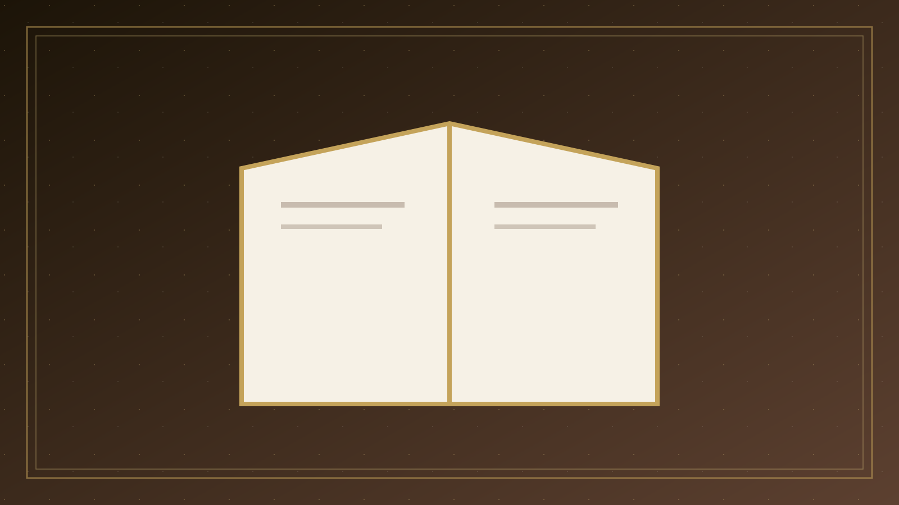
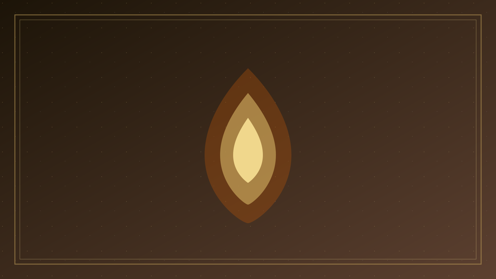
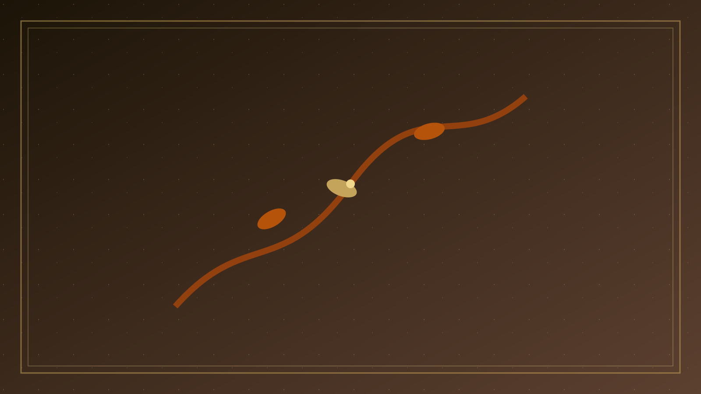

專論總覽
聖約中的聽見與跟從：以經解經、救贖歷史中的與神相交
本篇已按原有標題拆成可獨立閱讀的分題。請選一題進入；正文未經改寫，只把長頁分開。

01
問題意識
一、問題意識：靈修若離開聖經與教會 華人教會口中的「靈修學」，近於西方所謂 spiritual theology 或 Christian spirituality ：研究信徒如…

02
同行與默想
二、與神同行：交通在順服裡 舊約很少用後世那種「靈修」詞彙，卻一再描寫人在聖約中與神同行。
- 與神同行
- 聖言的默想

03
敬拜與真敬虔
四、詩篇與敬拜：讚美、哀歌、等候如何塑造人 祈禱的專題討論，此處不重複。
- 詩篇與敬拜
- 先知的批判
04
耶穌的生命
六、耶穌的生命：曠野、人群、客西馬尼與十架 福音書沒有把耶穌寫成靈性進階的導師，而是寫成走上十字架的兒子。

05
在基督裡
七、「在基督裡」與聖靈：新約靈修的核心 舊約的「同行」在新約被收進一個更尖銳的範疇：與基督聯合。

06
操練與分辨
八、操練的位置：恩典中的回應，不是賺取神 聖經確實吩咐操練，卻從不讓操練成為與神交易的貨幣。
- 操練的位置
- 試驗諸靈

07
牧養結論
十、牧養結論：靈修學服務門徒生活 把以上經文串起來，靈修學的牧養任務就清楚了。